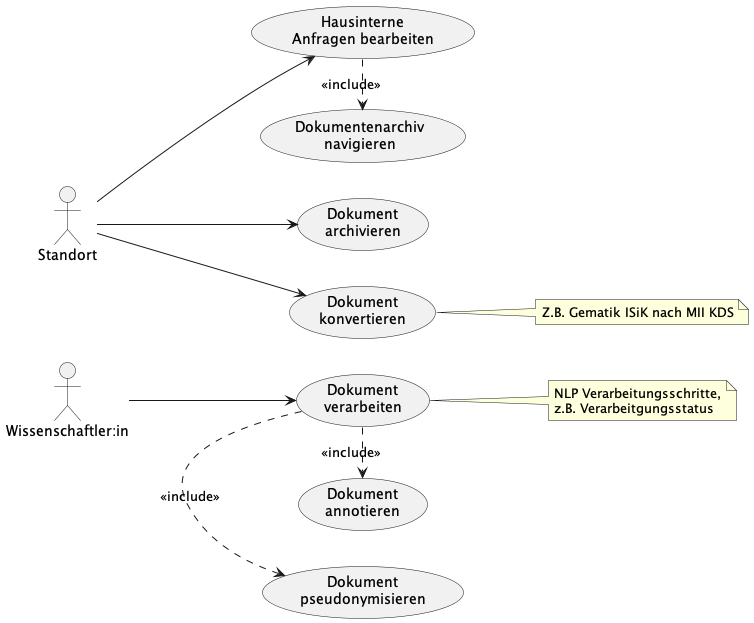

MII IG Dokument
2026.0.1 -

MII IG Dokument
2026.0.1 -

MII IG Dokument - Local Development build (v2026.0.1) built by the FHIR (HL7® FHIR® Standard) Build Tools. See the Directory of published versions
Diese Seite enthält Übersetzungen aus der Originalsprache, in der der Leitfaden verfasst wurde. Informationen zu diesen Übersetzungen und Anweisungen zum Abgeben von Feedback zu den Übersetzungen finden Sie hier.
Grundsätzlich soll mit dem Dokument-Profil die Möglichkeit gegeben werden Dokumente aus der klinischen Routine, sowohl intern als auch extern, interoperabel zu nutzen. Die definierten Metadaten unterstützen die Auffindbarkeit, Selektion und Weiterverarbeitung dieser Dokumente. Dokumente aus der klinischen Routine bilden jedoch eine sehr heterogene Gruppe. Eine Vielzahl unterschiedlicher Quellsysteme, historisch gewachsene Strukturen und Terminologien – wie zum Beispiel interne Hauscodes zur Kategorisierung der Dokumentarten – verhindern eine effektive Nutzung vor Ort und über die Standorte hinweg.

Die Interne Dokumentennutzung umfasst die Archivierung, Verwaltung und
Nutzung klinischer Dokumente innerhalb eines Krankenhauses oder einer
klinischen Einrichtung. Dabei stehen die Datenintegrationszentren (Standort)
als zentrale Instanzen für die Datenverwaltung im Fokus.
Datenintegrationszentren sollen in der Lage sein, klinische Dokumente
zusammen mit ihren Metadaten zu archivieren (Dokument archivieren) und
auffindbar (Dokumentenarchiv navigieren) zu machen. Die Metadaten, die im
Dokument-Profil beschrieben werden, umfassen
unter anderem:
Durch die standardisierte Beschreibung dieser Metadaten wird eine effiziente
Navigation im Archiv ermöglicht. Ärzte und andere klinische Nutzer können
Dokumente gezielt anfragen (Hausinterne Anfragen bearbeiten) und
durchsuchen, um relevante Informationen zu finden.
Ein weiterer wichtiger Aspekt der Internen Dokumentennutzung ist die
Konvertierung (Dokument konvertieren) von klinischen Dokumenten und
Metadaten, die nach anderen Interoperabilitätsstandards (z. B. HL7 CDA,
Gematik ISiK, KBV MIO) vorliegen, in einen Datensatz gemäß dem
Dokument-Profil. Diese Konvertierung stellt
sicher, dass auch ältere oder anders erzeugte Dokumente und Metadaten
integriert und einheitlich verwaltet werden können.
Neben den vorher beschriebenen Zwecken spielt die Interne
Dokumentennutzung ebenso eine Rolle in der Forschung.
Wissenschaftler:innen können im Rahmen von Natural Language Processing
(NLP)-Prozessen Zwischenergebnisse und Verarbeitungsschritte gemäß dem
Dokument-Profil speichern
(Dokument verarbeiten). Zum Beispiel können die Zwischenergebnisse
einzelner aufeinander aufbauender Prozessierungsschritte miteinander
verknüpft und dokumentiert werden (Dokument pseudonymisieren,
Dokument annotieren). Dadurch wird die Nachvollzieh- und
Reproduzierbarkeit von NLP-Pipelines für Wissenschaftlicher:innen
unterstützt.

Die Externe Dokumentennutzung zielt auf die Bereitstellung von klinischen Dokumenten und deren Metadaten für Forschungszwecke ab. Hierbei steht die Nutzung durch Wissenschaftler:innen im Vordergrund, die auf Basis der archivierten Daten neue Erkenntnisse gewinnen möchten.
Wissenschaftler:innen (Wissenschaftler:in) können auf einen mit Metadaten
angereicherten Korpus klinischer Dokumente zugreifen (Kohorte definieren).
Die Metadaten, die gemäß dem
Dokument-Profil beschrieben werden,
ermöglichen eine gezielte Auswahl und Filterung der Dokumente
(Daten selektieren). So können beispielsweise Dokumente eines bestimmten
Typs, aus einem bestimmten Zeitraum oder von einer bestimmten Kohorte
identifiziert werden.
Ein zentraler Bestandteil für Forschenden ist der Zugang zu Daten und
Metadaten klinischer Dokumente über das Forschungsdatenportal für Gesundheit
(FDPG). Darüber können Wissenschaftler:innen Machbarkeitsanfragen stellen
(Machbarkeitsanfrage stellen), um zu prüfen, ob die benötigten Daten für
bspw. eine geplante Studie verfügbar sind. Das Forschungsdatenportal nutzt
die im Dokument-Profil hinterlegten
Informationen, um die Benutzeroberflächen zu generieren. Beispielsweise
werden die Metadaten zu Dokumententypen, Bezeichnern und Beschriftungen
verwendet, um die Formulare dynamisch zu erstellen.
Für den Datentransport wird empfohlen den Dokumentkörper in die Ressource einzubetten. Die Dateien können hier auch zuvor komprimiert werden. Zusätzliche Dateien, die für die Interpretation und Nachnutzung des Dokuments notwendig sind (z.B. TypeSystem Dateien bei semantisch annotierten Dokumenten) können so auch direkt beigefügt werden.